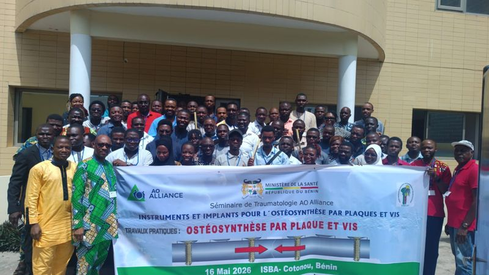

Faire un don
Chaque don finance une place de formation, un jeu d’instruments ou le déplacement d’un enseignant vers un hôpital de district. L’association est à but non lucratif : l’intégralité des dons va aux programmes.
Ce que change un don
Une place de formation
Couvre l’inscription d’un interne ou d’un personnel de bloc opératoire à une session de deux à trois jours.
Un poste d’atelier pratique
Modèles osseux, implants d’exercice et instrumentation pour un poste de travail pendant toute une session.
Une session en région
Déplacement et hébergement des enseignants, logistique et matériel pour former une équipe complète sur place.

Séminaire AO Alliance · Cotonou, mai 2026Choisir son don
Don ponctuel ou soutien régulier : vous restez libre d’interrompre à tout moment.
Moyens de paiement
Dons d’entreprise et partenariats
Hôpitaux, laboratoires, fabricants d’implants, fondations : un soutien pluriannuel permet de programmer les sessions à l’avance.
Parrainer une session
Votre structure finance une session complète dans une région et reçoit le bilan pédagogique.
Doter un bloc
Équiper un bloc de district en instrumentation d’ostéosynthèse et en consommables.
Soutenir une bourse
Une bourse nominative, attribuée par le conseil scientifique sur critères publics.
Transparence
Les comptes sont approuvés en assemblée générale et publiés chaque année.
Questions fréquentes
Le régime applicable est précisé sur le reçu : [texte à valider avec le conseil].
Oui, par carte ou virement international. Les frais bancaires éventuels sont indiqués avant validation.
À tout moment, par un simple courriel à contact@ao-cameroun.org, sans justification.
Oui : un point d’avancement des programmes est envoyé [fréquence] aux donateurs.
Vous préférez donner de votre temps ?
Enseigner dans un cours, relire un protocole, accueillir une session dans votre hôpital : le bénévolat compte autant que le don.